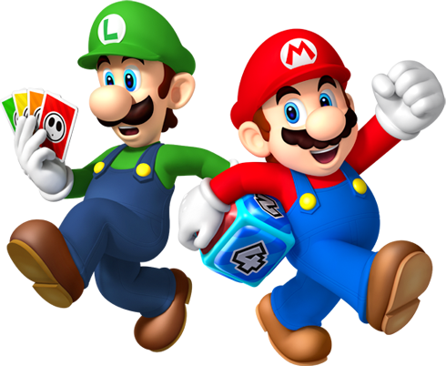

Mario é um encanador junto com seu irmão Luigi. Um dia, eles vão parar no reino dos cogumelos, governado pela Princesa Peach, mas ameaçado pelo rei dos Koopas, que faz de tudo para conseguir reinar em todos os lugares.
Veja o Trailer
